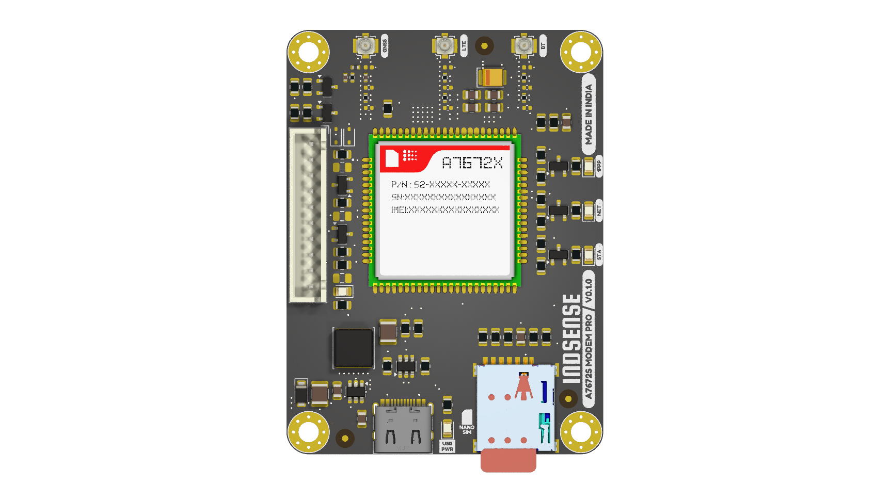
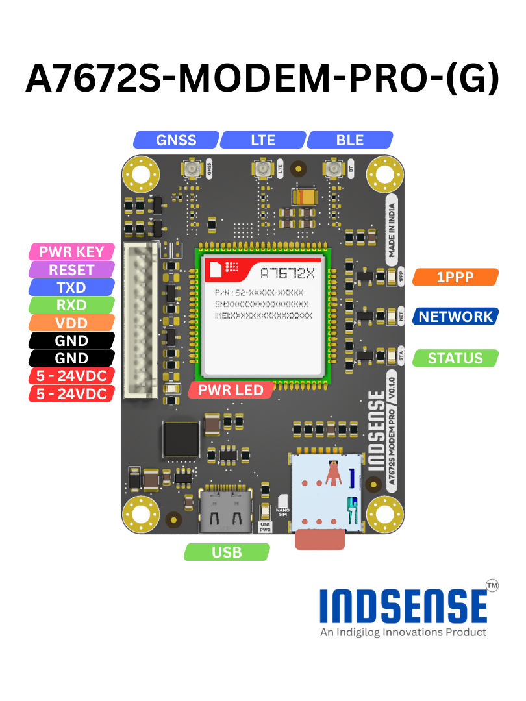

A7672S-MODEM-PRO
Introduction
A7672S-MODEM-PRO is an industrial LTE Cat-1 cellular modem designed for reliable and long-term IoT and M2M connectivity. Based on the SIMCom A7672S chipset, it provides stable 4G LTE communication with wide network coverage, making it suitable for industrial, commercial, and field-deployed devices.
The modem supports USB and UART interfaces and is controlled using standard AT commands, enabling easy integration with microcontrollers, single-board computers, and embedded Linux systems. It includes a built-in TCP/IP stack with support for HTTP/HTTPS, MQTT, and SSL/TLS, simplifying secure cloud and server communication.
A7672S-MODEM-PRO is designed for robust operation, featuring reliable RF performance, external antenna support, and protection suitable for industrial environments. Its compact form factor and low power consumption make it ideal for applications such as remote monitoring, smart energy meters, industrial automation, asset tracking, smart agriculture, and telemetry systems.

Available Variants
The A7672S-MODEM-PRO is available in two variants:
-
A7672S-MODEM-PRO
Based on the A7672S-LASC chipset. Supports LTE connectivity only and does not include GNSS or BLE. -
A7672S-MODEM-PRO-G
Based on the A7672S-FASE chipset. Supports LTE connectivity with integrated GNSS and BLE.
Specification & Features
| A7672S-MODEM-PRO | A7672S-MODEM-PRO-G | |
|---|---|---|
| Chipset | A7672S-LASC | A7672S-FASE |
| Power Supply | 5–24 V DC | 5–24 V DC |
| Cellular Technology | LTE Cat-1 | LTE Cat-1 |
| Cellular Connectivity | 4G LTE | 4G LTE |
| Data Services | TCP, UDP, HTTP, HTTPS, MQTT | TCP, UDP, HTTP, HTTPS, MQTT |
| USB Interface | USB 2.0 (Device) | USB 2.0 (Device) |
| UART Interface | AT command interface | AT command interface |
| SIM Interface | Nano-SIM (4FF) | Nano-SIM (4FF) |
| GNSS Support | ❌ | ✅ |
| GNSS Systems | — | GPS, GLONASS, BeiDou, Galileo |
| BLE Support | ❌ | ✅ |
| Bluetooth Type | — | Bluetooth Low Energy (BLE) |
| Antenna Interfaces | LTE | LTE, GNSS, BLE |
| Network Protocols | IPv4 / IPv6 | IPv4 / IPv6 |
| Security | SSL / TLS | SSL / TLS |
| Operating Mode | Always-on, packet data | Always-on, packet data |
| Integration Method | USB or UART | USB or UART |
| Form Factor | Compact embedded modem | Compact embedded modem |
| Dimensions | 50x67 mm | 50x67 mm |
| Suface Finish | ENIG | ENIG |
Pinout

Pinout Description
| PIN | Description |
|---|---|
| 5V - 24V | Input power pin. 5V to 24V DC |
| GND | Ground Pin |
| VDD | MCU Voltage |
| RXD | UART Receiver Pin |
| TXD | UART Transmitor Pin |
| RESET | Module Reset Pin |
| POWER KEY | Module Power Key Pin |
Interfacing with MCU
| A7672S-MODEM-PRO PIN | MCU PIN |
|---|---|
| VDD | MCU Power Supply Pin |
| RXD | MCU UART TX Pin |
| TXD | MCU UART RX Pin |
Logic Level Reference
For proper UART logic level compatibility, connect the module’s VDD and GND pins to the MCU’s corresponding power supply and ground reference.
Power Supply
The module supports a wide input voltage range of 5 V to 24 V DC and must be powered through the pin header power input.
Powering the module via the USB port is not supported and may result in improper operation.
Power Polarity
This module does not include reverse polarity protection. Ensure correct power supply polarity before connection. Applying reverse voltage may cause permanent damage to the module.
Powering the Module ON
The module can be powered ON using either of the following methods:
1. PWR KEY Control
The module can be turned ON by controlling the PWR KEY pin using an MCU GPIO.
To power ON the module, pull the PWR KEY pin HIGH for the required duration (refer to the module timing specifications), then release it.
This method allows the MCU to:
- Programmatically control power ON and OFF
- Implement power-saving and reset strategies
- Monitor and manage modem state
2. Auto Power ON (Solder Jumper)
The module also supports automatic power ON. By closing the dedicated solder jumper on the back side of the PCB, the PWR KEY signal is asserted automatically when power is applied.
When auto power ON is enabled:
- The module powers ON immediately after Power is applied
- MCU control of the PWR KEY is not required
- Suitable for simple or standalone deployments
Note
Only one power-on method should be used at a time. If auto power ON is enabled via the solder jumper, ensure the MCU GPIO connected to PWR KEY is disconnected or not actively driven.
Module Status LEDs
The module provides onboard LEDs to indicate power, network, and GNSS timing status.
Status LED
The STATUS LED indicates the power state of the module.
- ON: Module is powered ON and operating
- OFF: Module is powered OFF
Network LED (NET)
The NET LED indicates the current cellular network status of the module.
| NET LED Behavior | Module Status |
|---|---|
| Always ON | Searching for cellular network |
| 200 ms ON / 200 ms OFF | Registered on network or data transmission in progress |
| OFF | Module powered OFF, or in sleep mode (AT+CSCLK=1) with DTR pulled HIGH |
1PPS LED
The 1PPS LED indicates the GNSS one-pulse-per-second (1PPS) timing signal.
- Blinks once per second when GNSS is active and a valid timing signal is available
- OFF when GNSS is disabled or no valid GNSS fix is available
Note
The 1PPS LED is available only on the A7672S-MODEM-PRO-G variant.